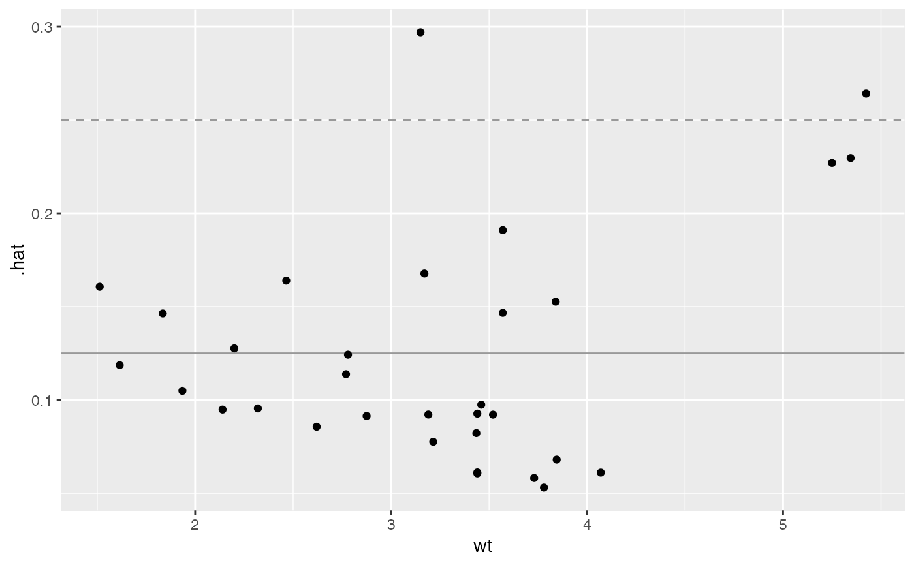

A function to display stats::influence's hat information against a given explanatory variable.
ggally_nostic_hat( data, mapping, ..., linePosition = 2 * sum(eval_data_col(data, mapping$y))/nrow(data), lineColor = brew_colors("grey"), lineSize = 0.5, lineAlpha = 1, lineType = 2, avgLinePosition = sum(eval_data_col(data, mapping$y))/nrow(data), avgLineColor = brew_colors("grey"), avgLineSize = lineSize, avgLineAlpha = lineAlpha, avgLineType = 1 )
| data, mapping, ... | supplied directly to |
|---|---|
| linePosition, lineColor, lineSize, lineAlpha, lineType | parameters supplied to |
| avgLinePosition, avgLineColor, avgLineSize, avgLineAlpha, avgLineType | parameters supplied to |
ggplot2 plot object
As stated in stats::influence documentation:
hat: a vector containing the diagonal of the 'hat' matrix.
The diagonal elements of the 'hat' matrix describe the influence each response value has on the fitted value for that same observation.
A suggested "cutoff" line is added to the plot at a height of 2 * p / n and an expected line at a height of p / n.
If either linePosition or avgLinePosition is NULL, the respective line will not be drawn.
stats::influence
dt <- broomify(stats::lm(mpg ~ wt + qsec + am, data = mtcars)) ggally_nostic_hat(dt, ggplot2::aes(wt, .hat))